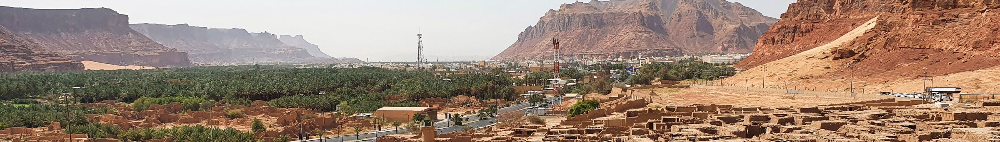

تواصل معنا
سؤال عن مكان، أو اقتراح نضيفه إلى الدليل؟ اكتب لنا.
أرسل رسالة
رسائلك المحفوظة
كم تبعد عن العُلا؟
اختر مدينتك، أو استخدم موقعك الحالي.
--كم بخط مستقيم
--ساعات قيادة تقريبًا
تقدير القيادة مبني على المسافة المستقيمة وسرعة متوسطة، والطريق الفعلي أطول.